生产排产六批实施：开发检查与界面
2026-10-01 · 唯一产品设计1.0.1 · 任务第27节
所有页面图使用开发夹具数据。正式业务验收按用户指令继续暂停；没有新增业务通过、用户接受或上线结论。
查看唯一实施任务 · 查看技术验证原记录 · 查看唯一设计正文
本次完成的业务入口
| 模块 | 结果 | 范围 |
|---|---|---|
| 1. 资源、技能与日历 | 编辑与有效期、负责人选择、两类新日历、净窗口回查、站点时间 | 源码完成；定向技术检查完成 |
| 2. 产品、工序与路线 | 多阶段及多人机要求；图保存版本校验；已生效版本保护 | 源码完成；定向技术检查完成 |
| 3. 订单与完整预检 | 未展开草稿事务更新；合法节点选择；无写入预检与问题修正入口 | 源码完成；定向技术检查完成 |
| 4. 排程与正式计划 | 业务名称选择、近期目录、三视图、发布确认及正式派工衔接 | 源码完成；定向技术检查完成 |
| 5. 执行、质量与数量 | 执行目录、报工成员/余额、合法替换资源与流转目标、数量流水 | 源码完成；定向技术检查完成 |
| 6. 报表与权限 | 名称筛选、来源下钻、导出权限及完整范围约束 | 源码完成；定向技术检查完成 |
技术结果与边界
规则、HTTP授权及模拟仓储；真实SQL未执行
类型检查与生产构建通过
最终排程5项、表单2项复查通过；其余保留同源证据
OpenAPI新增13个操作，旧操作保留；810个本地内外引用解析通过。API模块与Worker、前端制品均在独立目录生成，实际运行进程尚未更新。
首轮失败与修正原样记录：预检样例UUID、PowerShell Maven参数、开发代理前缀、漏补的目录响应、可见下拉定位及截图辅助类型范围。详细失败与复查见原日志和首次输出，未改低业务预期以得到通过。
已修正排程按钮权限名，补查普通用户具备权限时能够预检，缺少订单权限时拒绝。29项前后端权限均与现有脚本登记对应；未赋角色或写权限数据。
仍需原库前提
已回读的接回原库清单记录：localhost:3306/ry-vue缺APS29表，原APS连接及platform.aps.db用途未核实。本轮没有重新探测或迁移原库，也没有恢复旧隔离API/Worker。下一步需要明确原库迁移授权及合法原连接用途；仅运行现有APS V001～V006和29表范围，不扩入其他项目、造凭据或复制旧隔离库数据。
可查看的开发页面
下列图片均已保存后回读。包含滚动位置及操作后的实际状态；部分图保留提示关闭动画，不能据此宣称真实联机或完整业务验收。
CSV 导出沿用当前报表类型并生成可下载文件 · 开发模拟数据

人力累计按员工去重，并独立显示多席位峰值缺口 · 开发模拟数据
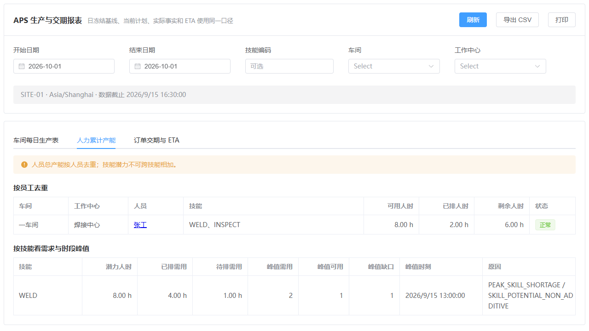
完整预检与名称定位 · 开发模拟数据
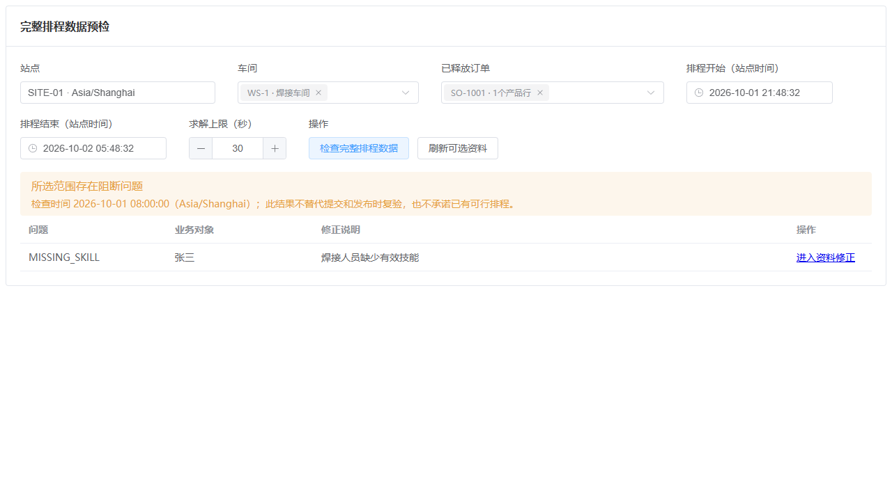
工作台发布和废弃都只提交带行版本和原因的命令 · 开发模拟数据
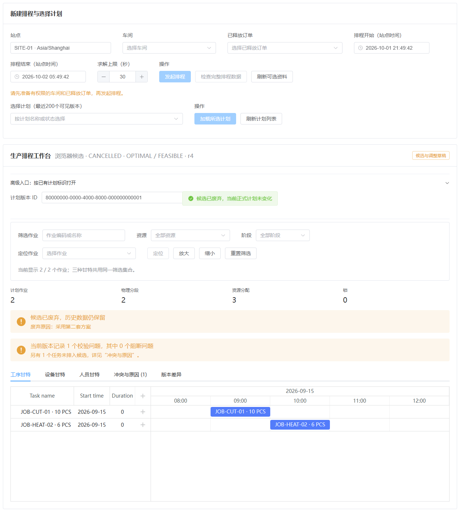
工作台呈现空态和加载态，并可在接口失败后重试恢复 · 开发模拟数据
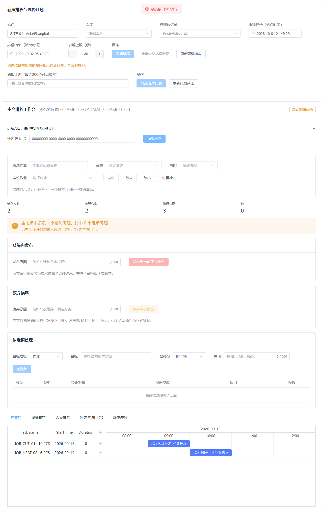
工作台联动三甘特、筛选定位并解释冲突和未排任务 · 开发模拟数据
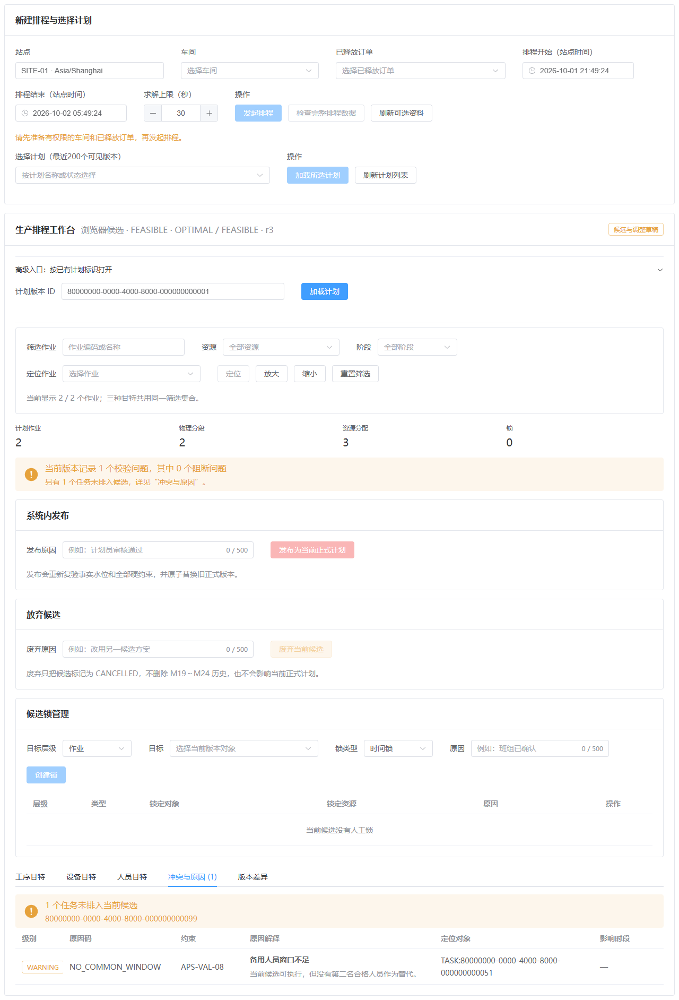
工序多阶段与失败保留 · 开发模拟数据
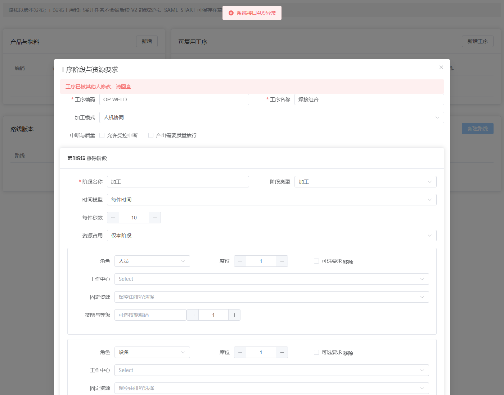
工序第二阶段 · 开发模拟数据
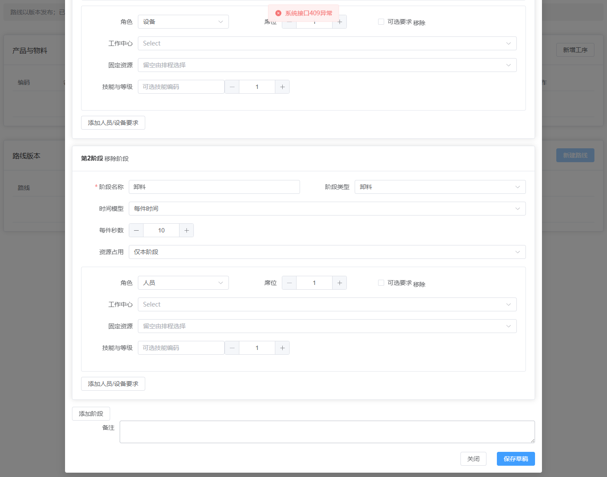
并发冲突后刷新事实且保留报工输入供核对重试 · 开发模拟数据
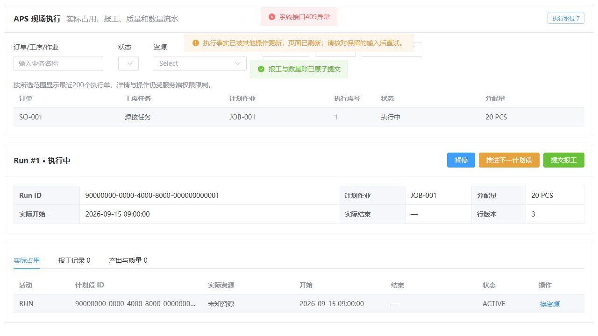
当前正式计划用版本化命令提交插单、拆批和固定合批 · 开发模拟数据
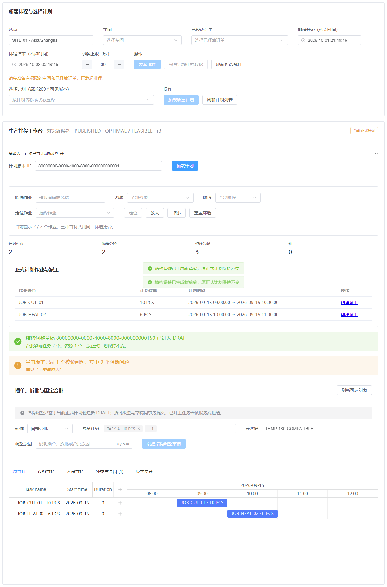
现场页从空态读取 Run，并按行版本提交暂停命令 · 开发模拟数据

窄屏下主控件可用，并可用键盘切换甘特视图 · 开发模拟数据
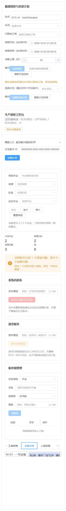
缺数据时 ETA 明确显示 UNKNOWN 和原因，不伪造完成时间 · 开发模拟数据

订单页展示多产品行和冻结任务网络 · 开发模拟数据
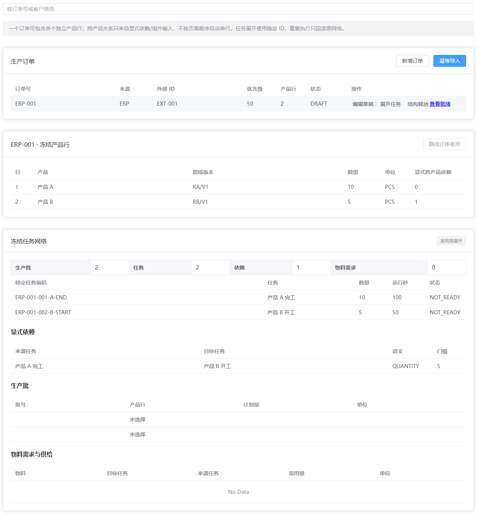
资源页按资源去重并展示多技能与绝对日历 · 开发模拟数据
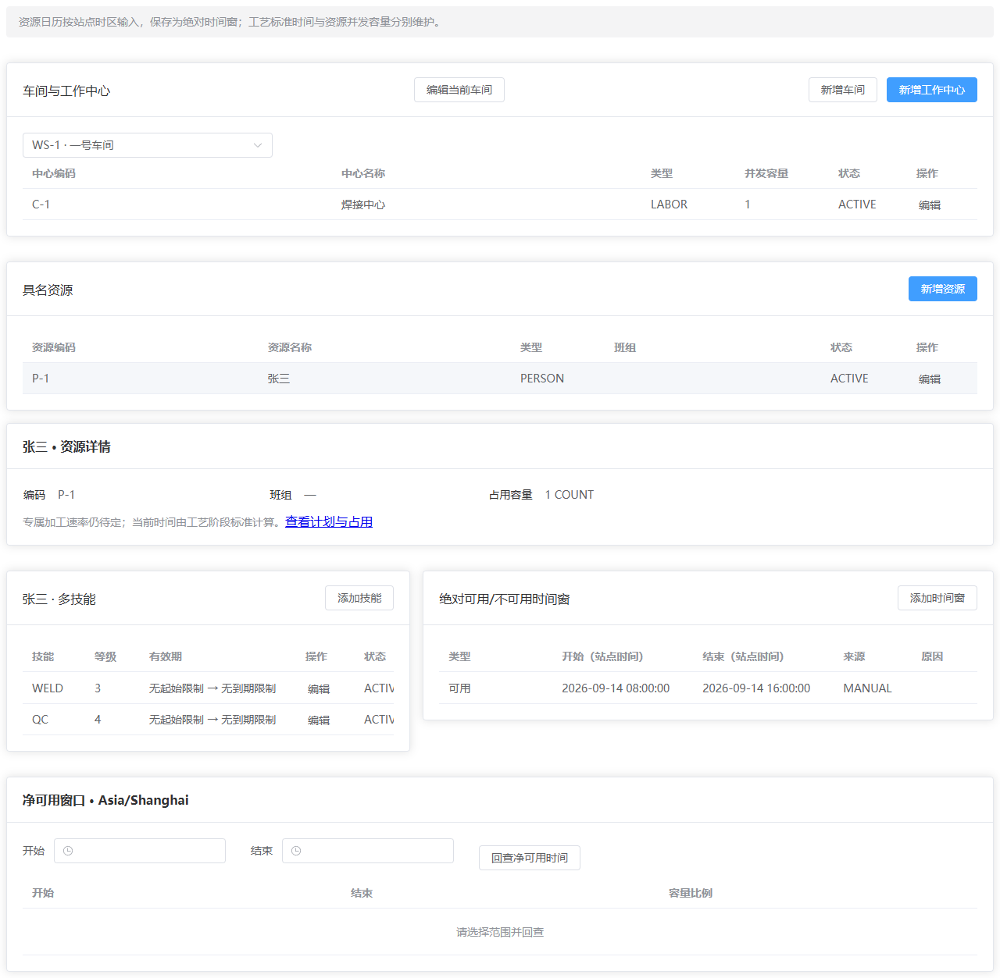
路线页展示版本化 DAG 和显式依赖 · 开发模拟数据

运行中可幂等推进下一计划段 · 开发模拟数据
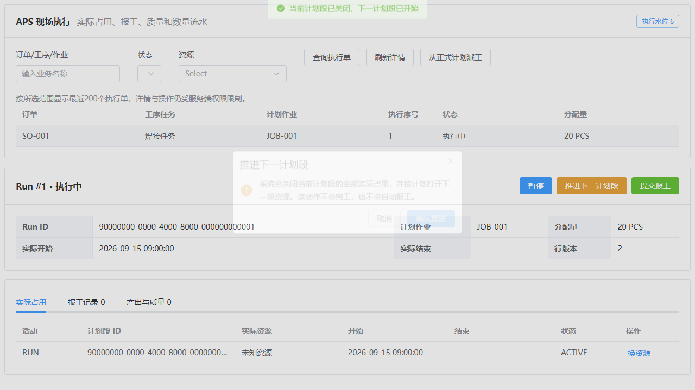
部分报工以幂等键提交，并显示原子生成的产出批 · 开发模拟数据
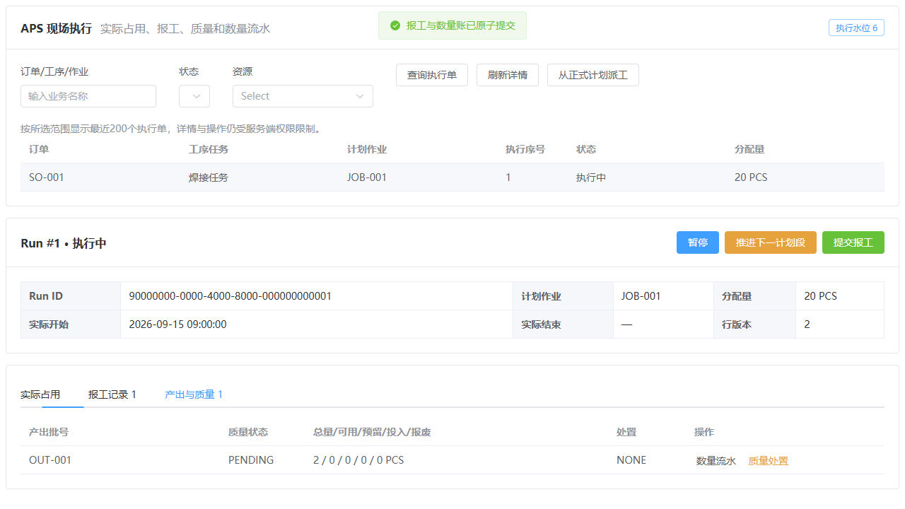
默认展示日冻结基线与当前正式计划的可追溯口径 · 开发模拟数据
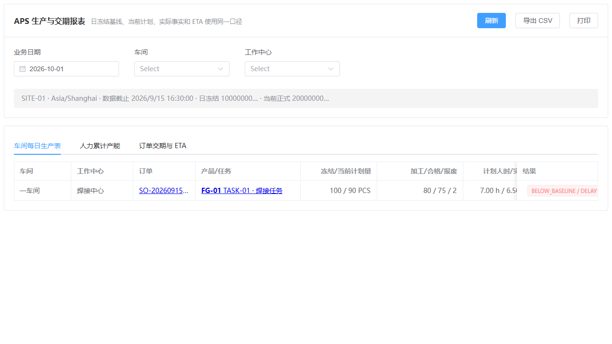
可追溯记录
- Java权限修正最终检查.log
- 权限修正类型检查.log
- 权限修正单元检查.log
- 前端权限修正构建.log
- Worker打包.log
- 浏览器最终检查.log
- 受影响浏览器复查.log
- 工序表单定向复查.log
- 工序截图定位复查.log
- 契约检查.json
- 源码与制品版本.json
- 交付引用检查.json
- 排程权限页面复查.log
- 权限修正页面复查.log
- 权限登记核对.json
- Java检查汇总.json
保持一份现行需求与设计；阅读版自动生成，本文仅是本轮开发证据快照。历史计划、真实验收结果及用户决定仍在原事实源维护。